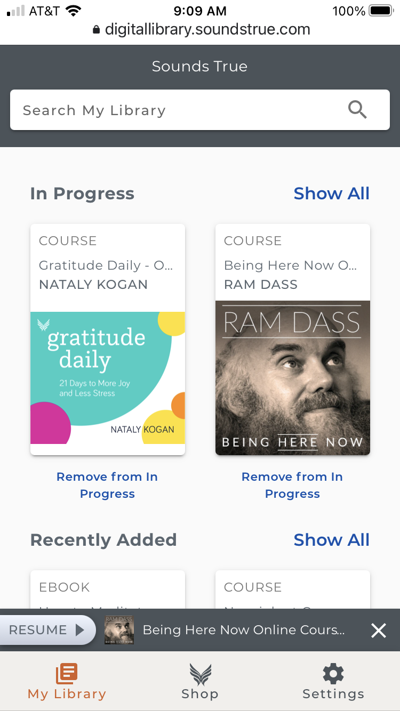
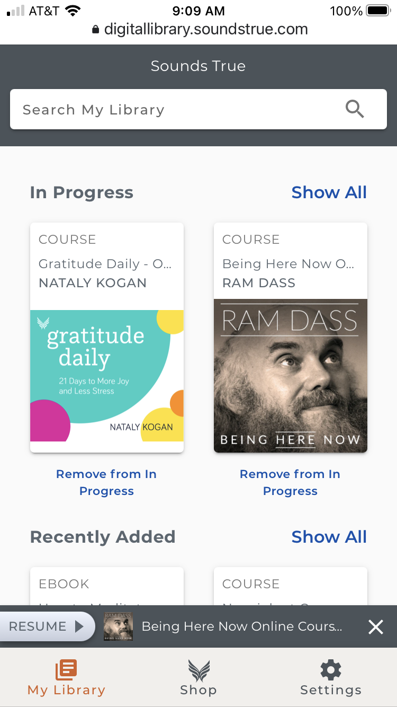

Kelly KingUX Engineer
Who I am & what I do
I am a user researcher, interaction designer, and accessibility specialist with 15+ years experience working in ecommerce. When collaborating with my team I bring the customer’s voice to the forefront of the conversation. By focusing on research, analytics, and best-practices I strive to make inclusive, accessible, and exceptional user experiences.
My goal, the goal, of doing user research is to benefit both the customer/user and the business. The user benefits with improved experience, occasional delight, and hopefully positive emotions. The business benefits with increased revenue, not only through higher sales, but through decreased business costs, such as Customer Service calls. The business also benefits by being able to more align their values with their actions. My current employer has several core values that speak to treating others with respect and dignity. By improving the customer experience of their products and platforms they are able to fulfil their core values.
My credentials include degrees in Architecture (BS) and Computer Art (MFA), and certification in User Experience (NNG) and User Experience Research (MeasuringU).
Digital Library PWA
skills
- Qualitative data analysis
- Paper prototype testing
- Interactive prototypes
- Remote user tests
- Wireframing
- User flows
- Surveys
- Accessibility review
summary
The Digital Library is what our customers use to watch/listen/read the media they purchase from us. We replaced our native iOS and Android apps and the desktop application with a PWA (progressive web app). My task was to design the content, layout and user interactions for PWA, and to assist with its accessibility review.
Since its launch, the PWA has held a steady 6% conversion rate for purchases.
research
Fortunately, we have several hundred app reviews for both our iOS and Android apps. I read through these qualitative customer reviews to find out what our customers thought about our apps.


Overall, customers were initially happy when the apps first came out. However, due to the lack of regular updates and enhancements, they became disappointed in the apps' lack of features that are commonly found in similar applications, such as iTunes, Netflix, Amazon Prime, Audible, etc.
"This is a clumsy app compared to Audible's and their competitors. No sleep timer. No auto-stop when transmitters or phones are shut off or removed. Quite often the app fails to stop on command until I restart."
Review on Google Play Store, Dec 2019
proposed solution
Unfortunately, the need to ship a MVP quickly restricted the inclusion of most customer requests. The MVP is a parity of the current experience, with a few of the top customer requests included. For example, customers will now be able to read an ebook, watch a video, and listen to an audio file directly within the PWA.

research
I designed and ran one round of in-person paper prototype user tests using my initial low-fidelity wireframes. These tests resulted in several minor changes to the designs, for example changing a heading on one of the pages.
I then collaborated with our Digital Designer on the high-fidelity mock-ups. Using the mock-ups, I ran a round of remote interactive prototype tests. These user tests produced positive results: no major usability issues were found.

Once the developers completed building the new PWA, I ran a beta test with my fellow co-workers (100+). The test consisted of users completing multiple end-to-end tasks: completing a purchase on our e-commerce site and then consuming the product on the PWA. One glaring issue emerged that was not expected: one of the main pages of the PWA, a product-marketing page, was so similar to our e-commerce website homepage that users thought they were on our e-commerce site. Since the functionality of the two sites are completely different, users were confused when they were unsuccessful completing e-commerce tasks on the PWA.
“My first reaction was that I was not in my digital library as it took me to what looked like a version of our website”.
“I am also confused because I am looking for a digital library option but the only thing I see is content. Is this content the digital library?”
“I clicked go to digital library several times but it did not take me to my digital library.”
Responses from the beta test
I recommended that we remove the marketing page. There was an initial push-back against removing the revenue-generating page. We compromised by removing the page and replacing it with a ‘Shop’ link to our e-commerce site. I ran another beta test with a select group of co-workers, and this time there wasn’t any confusion between two sites.
accessibility review
While the developers were building out the pages of the PWA, I worked with our QA Engineer to complete an accessibility review. Our QA Engineer ran the Chrome plugin Axe on the pages, and I completed manual accessibility tests using VoiceOver on Chrome. We compiled our issues into a spreadsheet where I ranked all the issues on a 4-point severity scale. I made notes for both the automated and manual-found issues, describing the problem and offered coding suggestions for remedy. The most severe issues were fixed for the MVP.
current status
 

The PWA launched at the end of April 2020. There were some unavoidable issues, such as users having trouble resetting their password (a requirement for switching platforms), but overall it was a success. The PWA has held a steady 6% conversion rate for purchases. There are two places where we encourage users to make a purchase: the “Shop” link in the navigation, and a “more from this author” link on each purchased product page.
Optimize Product Sales Page
skills
- Leading workshops
- Journey Asset Map
- Quantitative data analysis
- Heuristic review
summary
One of our most popular products is an eight-week online course in mindfulness. The course’s marketing materials (email, social, affiliate) and long-form sales page have never been updated. Sales had plateaued.
My task was to review the marketing materials and sales page and make suggestions for improvement with the goal of increasing sales.
After the marketing materials and sales page were updated, unique product purchases have consistently been increased by +250%.
workshop
I led a Journey Asset Map workshop with the Project Manager, Design Manager and Copywriter, with the goal of improving the marketing assets for the mindfulness online course. We printed out all visual assets for the product, taped them to a large wall, and mapped out the multiple customer journeys. The visual assets included: marketing emails, social assets, affiliate assets, the sales page, and the online course itself.
We then annotated the map with data regarding each asset and journey segment. Data such as heatmap and click map data from the sales page and online course, clicks and resulting sales revenue from each email. We held multiple group discussions regarding all the data. We found multiple instances of where we could improve the design.

heuristic review
I also completed a heuristic evaluation of the sales page. I used the Nielsen Norman Group’s 10 general principles for interaction design, and their UX best-practices in terms of design and layout in my review of the page.
results
The marketing materials and sales page were redesigned based on my recommendations. The first launch resulted in an increase of 256% in unique product purchases from the last launch of the old design. The second launch resulted in an increase of 370% in unique product purchases from the last launch of the old design. We are continuing to see a large increase in purchases launch-after-launch.
Redesign Site Navigation
skills
- Quantitative data analysis
- Wireframing
- Paper prototype tests
- Remote user tests
- Collaboration
summary
I analyze our customers' use of the navigation on our e-commerce site and helped design a more useful and usable replacement.
The updated navigation is a great success. Heat maps show that customers' usage of the navigation greatly increased. The products featured in the navigation have increased in sales - percent increase per unique product purchase ranges from 92% to 1950%. Our site usability score also increased from an average of 3.05 (on a Likert 5-point scale) in January of 2020 to 3.97 in July 2020.
problem
None of our customers were using the main navigation on our website. A recent click map of the homepage showed that out of 10,000 users, the navigation received 0% of clicks. As a result, our users were using search as their primary means of locating products and information. By defaulting to search, users were presented with a large search result list that they then had to filter themselves.
I hypothesized there were several reasons why our users were not using the main navigation: the link text was too specific, confusing, and there were too many items (11 links).
"You have so many products, I don’t know where to begin."
Common complaint from our customers
research
I analyzed our customers’ search terms from Q1 2019. The data showed that the majority (44.8%) of searches are for a specific author name, followed by topic (32.7%), and then by product title (13.1%). The navigation did not highlight these popular search areas.

solution
Working with the Digital Design and Product Manager, I used this data to design a new navigation that focused on the search terms our customers used.
After two sets of in-person paper prototype tests, discussions with internal product teams, and several rounds of revisions, the Design and Product Manager and I finalized the wireframes and functionality for the new navigation.

current status
The new Shopify site went live at the end of April 2020.
Our heat & click map data shows that about 11.72% of clicks on the homepage were for content in the drop-downs. This is a great increase over 0% of clicks from the previous navigation.
There are two other improvements that resulted from the new navigation. First, revenue was increased by the product placement in the menu drop-downs. The percent increase per unique product purchases ranged from 92% to 1950%.
Second, our overall user experience scores for the e-commerce site increased. Our site usability score increased from an average of 3.05 (on a Likert 5-point scale) in January of 2020 to 3.97 in July 2020, and our repurchase score increased from an average of 3.5 in Jan 2020 to 4.35 in July 2020.
I realize that the improvement in scores may not be the sole result of the new navigation; however, there were only two structural changes made during the site transition (the new navigation and a stepped checkout), so I believe the new navigation was at least partially responsible for the improvement in scores.
next steps
Unfortunately, there is a bug with the hover activation of the navigation. For users using a mouse with a touch laptop or touch monitor, the drop-downs do not close when the cursor is moved out of the drop-down. The user has to move their cursor out of the drop-down and then click on the page. This bug was revealed during remote user testing soon after the new site went live. There is a ticket to fix this issue in the backlog.
Recategorize Products
skills
- Quantitative data analysis
- Collaboration
summary
The product categories on our site were oddly specific, confusing, and are not industry-standard for our niche. My task was to work with the E-commerce Product Owner to determine new categories for all 8.5k products on our site.
The new categories were published at the end of April 2020. We are now more easily able to track sales metrics by category, resulting in more information to influence future acquisitions.
research
There were several sets of data that I used to compile a list of possible categories. First, I used the search term data from our website. The second highest (32.7%) type of search term used by our customers (Q1 2019) was topic, such as: mindfulness, meditation, yoga, etc. I ranked the topic search terms our customers were using. This clearly showed what topics our customers are most interested in.
The second set of data I considered was the categories used by our direct competitors: Amazon, Hay House, Llewellyn, Inner Traditions, and Shift Networks. The third set of data I considered was the number of products we have in the initial list of categories. There needed to be a sufficient amount of products in each category.
After considering these three sets of data, I compiled a list of possible categories. The e-commerce Product Owner and I worked to whittle down the list to 14 parent categories and 20 child categories. Several different teams then went through our entire catalog of 8.5k products and recategorized them.

current status
The new Shopify site The new categories are featured in the main navigation drop-downs and in the filters on search result and product category pages. I am still collecting data on the usefulness of these links and filters.
One outcome is the sales metrics we can now gather from the new categories from within our ecommerce platform. Spirituality is by far the highest grossing category with revenue in the high 6-figures for Q2 2020. This information will help inform our future product acquisitions.